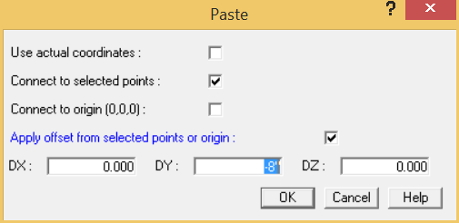

Inserting an AutoPIPE Model
You now have selected two points in the model (B01 and B02) where the frame structures can be inserted. In this section you will define the pipe as resting on the frame without being rigidly connected to the frame centerline. The connection between pipe and frame will then be defined using a two-point support.
1. Select File > Import/Export > Insert Model > AutoPIPE Model (*.dat).
- When the Insert Model dialog appears, double-click the supz8x18.dat file. The frame structure
model you created earlier is displayed.
- Set the base point of the inserted model to 3, then press OK to use point 3 as the reference point when placing the frame structure.
The Paste dialog is displayed as shown below. By default AutoPIPE assumes that we will connect the centerlines of the frame to the pipe and thus share the same point name, i.e. beam point 3 will be renamed B01.
